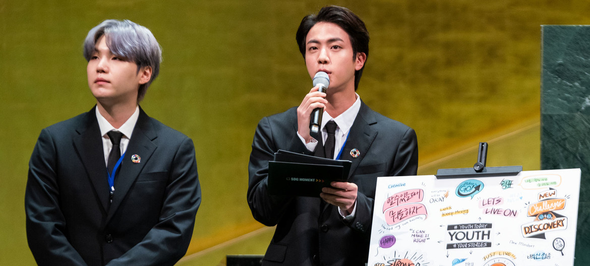
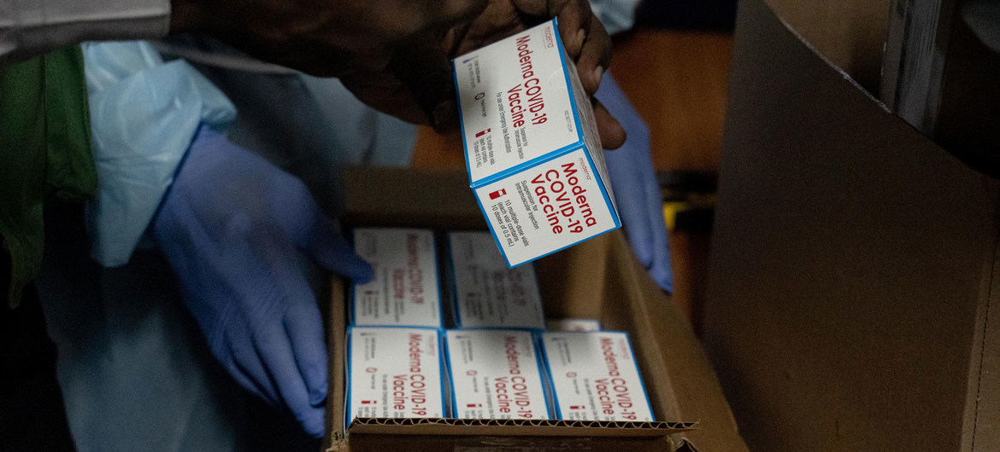

Noticias ONU
BTS en la ONU, Cambio Climático, COVID-19... Las noticias del momento
20 Septiembre 2021 - Objetivos de Desarrollo Sostenible
Las estrellas del pop coreano BTS han estado hoy en la ONU, para ayudar a movilizar a los jóvenes para lograr los Objetivos de Desarrollo Sostenible. La COP26 contra el cambio climático, en riesgo de fracasar. El 90% de los países de las Américas han alcanzado el objetivo de vacunar al 10% de su población contra el COVID-19.
BTS acude a la ONU para movilizar a los jóvenes por un desarrollo sostenible
Las estrellas del pop coreano BTS han estado hoy en la ONU, para ayudar a movilizar a los jóvenes para lograr los Objetivos de Desarrollo Sostenible. Los integrantes de la banda han ayudado a promover los objetivos globales de lucha contra la pobreza, la desigualdad, la injusticia y el cambio climático antes de la reunión anual de líderes mundiales de la ONU que arranca este martes. BTS lanzó un mensaje de esperanza, asegurando que los veinteañeros no son la generación perdida de la COVID-19, sino la que ha dado la bienvenida y se ha adaptado a los cambios. “Lo importante son las decisiones que tomamos cuando nos enfrentamos al cambio. Algunos nos han preguntado si estamos vacunados y naturalmente que sí. Las vacunas son la vía para estar aquí. Están haciendo lo posible para adaptarnos al cambio y creemos que no queda mucho para que volvamos a vernos cara a cara Un millón de personas vieron en directo a BTS en el canal de Youtube de la ONU.
La cumbre COP26 contra el cambio climático corre el riesgo de fracasar

El Secretario General ha mantenido una reunión con líderes mundiales para pedirles que hagan “lo necesario para que la Conferencia sobre Cambio Climático sea un éxito y marque un verdadero punto de inflexión” en la lucha contra el calentamiento global. Según los compromisos actuales de los Estados miembros, el mundo se encuentra en “una trayectoria catastrófica hacia los 2,7 grados de calentamiento, en lugar de los 1,5 que todos acordamos que debía ser el límite”, dijo Guterres que insistió en que se necesita una reducción del 45% de las emisiones para 2030, Guterres pidió a los países que mantengan ese objetivo y animo a los más desarrollados a que cumplan con su compromiso de aportar 100.000 millones de dólares anuales para la acción climática en los países en desarrollo. Además, dijo que hasta el 50% de esos fondos deben ir destinados a la adaptación a los cambios del clima. Este lunes, Suecia y Dinamarca, han anunciado compromisos en ese sentido y Guterres cree que más podrían seguir ese camino.
La cumbre COP26 contra el cambio climático corre el riesgo de fracasar
Así lo ha anunciado el director general de la Organización Mundial de la Salud, durante la apertura del Consejo Directivo a Organización Panamericana de la Salud (OPS), El doctor Tedros hizo cuatro peticiones concretas a los Estados miembros. En primer lugar, que mantengan un enfoque integral y basado en el riesgo para prevenir la transmisión del coronavirus y salvar vidas. En segundo lugar, apoyo para alcanzar los objetivos globales de vacunación, en las Américas y en todo el mundo. En tercer lugar, Tedros pidió desarrollar y adoptar un acuerdo internacional jurídicamente vinculante sobre la preparación y la respuesta ante una pandemia. Y, por último, que respalden una OMS más fuerte.
Para estar informado de la actualidad internacional, subscríbete a nuestro boletín Descarga nuestra aplicación Noticias ONU para IOS o Android devices.